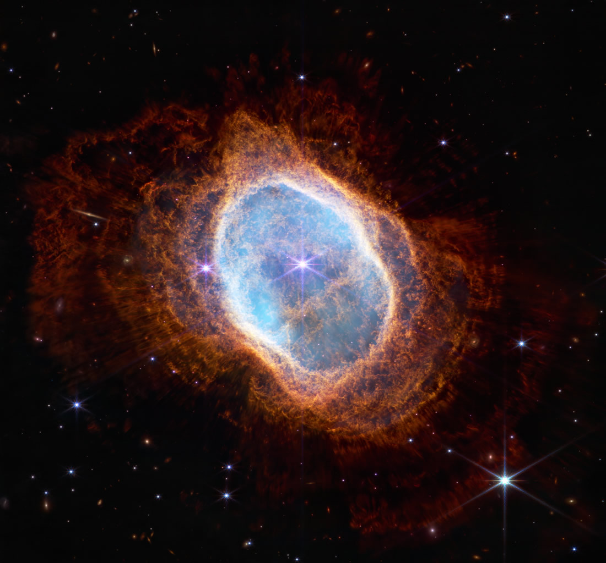

<!DOCTYPE html>
<html>
    <head>
        <script
            crossorigin
            src="https://unpkg.com/react@18/umd/react.development.js"
            ></script>
            <script
            crossorigin
            src="https://unpkg.com/react-dom@18/umd/react-dom.development.js"
        ></script>
        <script src="https://cdnjs.cloudflare.com/ajax/libs/babel-standalone/6.26.0/babel.min.js"></script>
        <title>React Practice</title>
    </head>
    <body>
        <div id="root"></div>
        <script type="text/babel">
            const root = ReactDOM.createRoot(document.getElementById("root"))
            
            // function createImg() {
            //     const images = 
            //     <React.Fragment>
            //         
            //         <p>
            //             <b>Status: 1st Image Released 7/12/22 ~10:39am EDT</b>
            //             <br/>
            //             NASA's James Webb Space Telescope has produced the deepest and sharpest infrared image of the distant universe to date.
            //             Known as Webb’s First Deep Field, this image of galaxy cluster SMACS 0723 is overflowing with detail.
            //         </p>
            //         
            //         <p>
            //             <b>Status: 1st Image Released 7/12/22 ~10:46am</b>
            //             <br/>
            //             NASA's James Webb Space Telescope has captured the distinct signature of water, along with evidence for clouds and haze, 
            //             in the atmosphere surrounding a hot, puffy gas giant planet orbiting a distant Sun-like star.
            //         </p>
            //         
            //         <p>
            //             <b>1st Image Released 7/12/22 ~11:01am</b>
            //             <br/>
            //             Some stars save the best for last.

            //             The dimmer star at the center of this scene has been sending out rings of gas and dust for thousands of years in all directions, and NASA's James Webb Space Telescope
            //             has revealed for the first time that this star is cloaked in dust.
            //         </p>
            //         
            //         <p>
            //             <b>Status: 1st Image Released 7/12/22 ~11:13am</b>
            //             <br/>
            //             Stephan's Quintet, a visual grouping of five galaxies, is best known for being prominently featured in the holiday classic film, 
            //             “It’s a Wonderful Life.” Today, NASA’s James Webb Space Telescope reveals Stephan’s Quintet in a new light. 
            //             This enormous mosaic is Webb’s largest image to date, covering about one-fifth of the Moon’s diameter. 
            //             It contains over 150 million pixels and is constructed from almost 1,000 separate image files. 
            //             The information from Webb provides new insights into how galactic interactions may have driven galaxy evolution in the early universe.
            //         </p>
            //     </React.Fragment>;
            //     return images
            // }

            // function Welcome(props) {
            //     return <h1>Hello, {props.name}</h1>
            // }

            // const element = <Welcome name='James'/>
            
            function UserInfo(props) {
                return (
                    <div className="UserInfo">
                    <Avatar name={props.name} avatarUrl={props.avatarUrl}/>
                    </div>
                )
            }

            function Avatar(props) {
                return (<div>
                    
                    <div className="UserInfo-name">
                    {props.name}
                    </div>    
                </div>)
            }
            
            function Comment(props) {
                return (
                    <div className="Comment">
                    <UserInfo name={props.name} avatarUrl={props.avatarUrl} />
                    <div className="Comment-text">
                        {props.text}
                    </div>
                    <div className="Comment-date">
                        {props.date}
                    </div>
                    </div>
                );
            }

            function App() {
                const element = 
                <div>
                    <Comment name="James" avatarUrl="./images/facebook-img.png" />
                    <Comment name="Oliver" avatarUrl="./images/pinterest-img.png" />
                </div>
                return element
            }

            root.render(App() )
        </script>
    </body>
    
</html>